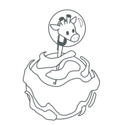
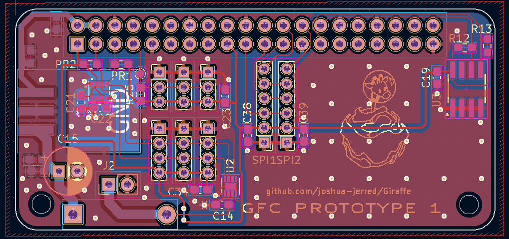
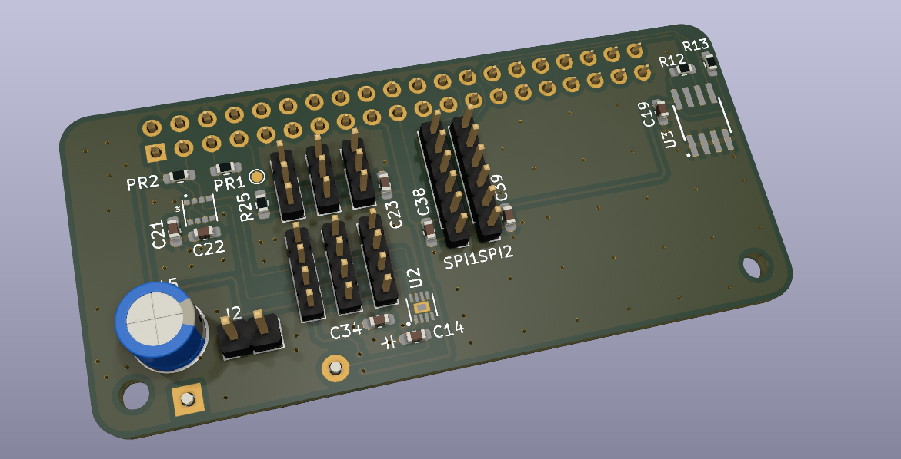
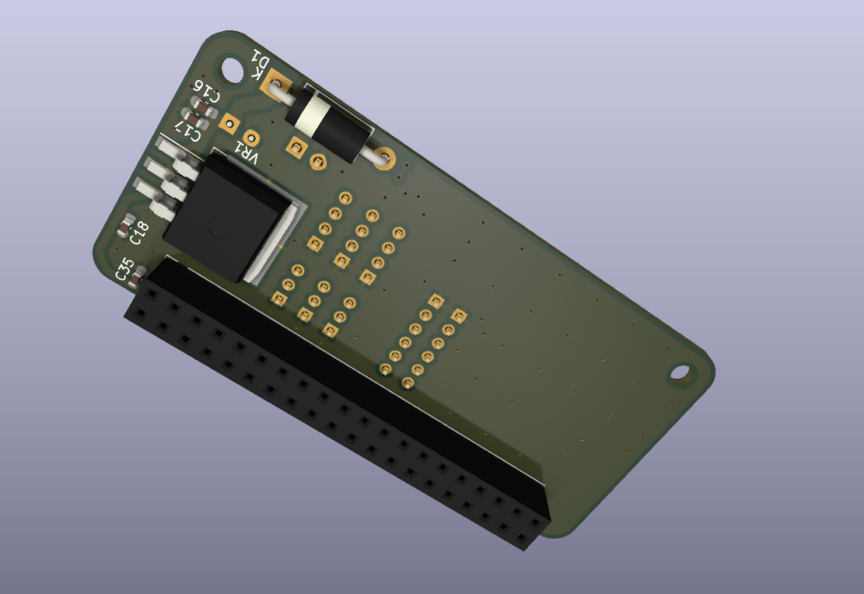

- Generated by
 1.9.1
1.9.1
|
Giraffe
0.3
A Unified, Semi-Autonomous, High Altitude Balloon Flight Control Framework.
|

V0.3
https://github.com/joshua-jerred/Giraffe
GFS, or Giraffe Flight System, is what actually runs on the flight computer.
The flight system software consists of modules and utilities which will be explained below.
Pulling all of these items together is the FlightRunner. The FlightRunner is responsible for using all of the modules to run the Flight Loop. The flight loops, which are [configured by the user](deadlink), determine what actions the FlightRunner will take. The flight loop is the what to do, and when to do it of the FlightRunner.
The basic actions of the FlightRunner are similar to the following:
Modules are the distinct sections of the Flight Computer. Each module has a specific task. For example, a config module which is responsible for reading and parsing the configuration file. The telemetry module is responsible for handling all telemetry.
You can read more about each module on their respective pages.
Utilities are common items that are used between modules. They include simple libraries and common types.
You can read more about each module on their respective pages.
"Extensions" refer to each data collection tool or sensor. Each type of extension has all of it's own code defined in a single class. Each extension also inherits a common "extension" class which allows for quick addition of new extensions and simple integration into the system.
The extensions are started by the flight runner in their own thread. This is important as the extensions have nearly full control over what they do and when they do it. Each extension interfaces with the data stream which connects them to the rest of the system.
The extension module is what handles each extension. It creates the objects and controls the startup, stopping, and restarting of the extensions.
Here is a simple example of how an extension is set up.
A simple extension thread will do the following. The thread will collect data from it's sensor, add that data to the data stream, wait a user specified amount of time, and do it again. The amount of time is specified in the configuration of each extension under the value 'update interval'.
Running in this way is helpful because some sensors are very slow and can take previous time away from other resources.
Telemetry is all taken care of by the telemetry module. The FlightRunner will decide when to send data. It can call aprsPacket(location), dataPacket(data), sstvImage(image) whenever it wants to. This does not cause it to transmit right away, instead it will just add a transmission request to the telemetry transmission queue. An independent thread will look at the queue and transmit things one at a time. SSTV images can take a couple of minutes, so APRS and AFSK packets can stack up if needed. They will be sent after the SSTV transmission is complete. This allows the FlightRunner to continue on with it's work while the telemetry module worries about actually sending everything.
The debugging Web Server is a simple module that allows you to view all of the data related to GFS. It currently needs to be started separately from ./bin/web-server/
To start it make sure that it's enabled in the configuration file for GFS and run it with python3.
python3 main.py
Currently in early stages of planning. It will at least include:
Currently I'm in the process of prototyping the hardware. The goal now is to keep it in a similar form factor as a Pi Zero.
It's all designed in KiCad, you can see the schematics and pcb files in the 'hardware' directory.
Hardware includes:
The Pi Zero will be sandwiched between two boards, with the bottom one being dedicated to the radio. This is done for form factor reasons and RFI reasons.



Copyright 2022 Joshua Jerred